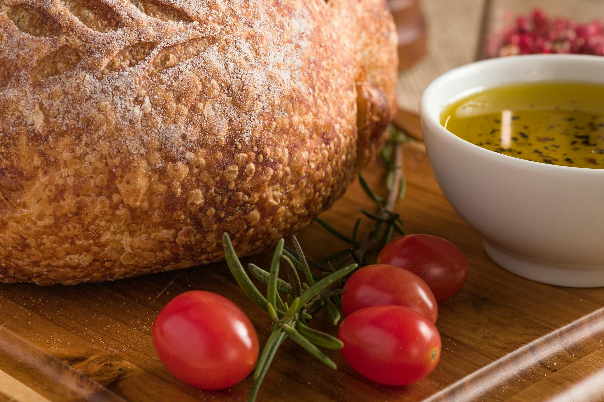

<
Barley Bread

Ingredients
- 500g of barley flour
- 1 tablespoon of active dry yeast
- 1 teaspoon of salt
- 400ml of warm water
Preparation
- In a large bowl, mix the barley flour, yeast, and salt.
- Gradually add the warm water and mix until a homogeneous dough forms.
- Cover the bowl with a clean cloth and let the dough rest for about 1 hour, or until it doubles in size.
- Preheat the oven to 200°C (390°F).
- Place the dough in a greased baking pan and bake for approximately 40 minutes, or until the bread is golden.
- Let it cool before slicing and enjoying.